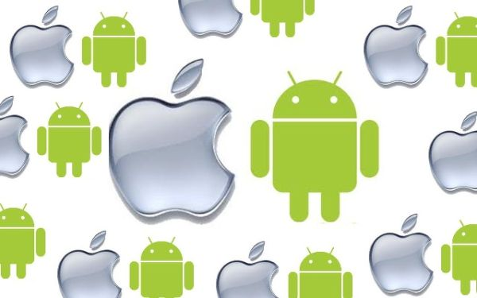

Руководство по синхронизации Android с Mac OS
Некоторые люди полагают, что Android-устройства и компьютеры на базе Mac OS не могут взаимодействовать. Возможно это заблуждение было отчасти верно в далёком прошлом, однако в настоящее время существует множество методов, приложений и сервисов, позволяющих использовать своё устройство на базе Android OS с Mac OS. В рамках одной статьи невозможно описать все доступные нам для этого средства, однако мы постараемся рассказать вам о наиболее лучших из них. Многие сервисы, о которых далее пойдёт речь, являются облачными и позволяют сделать процесс обмена информацией между устройствами простым и безболезненным, хотя мы также будем касаться и методов, связанных с использованием USB-соединения.
Синхронизация документов
В отличие от iPhone, передача файлов на Android-устройства осуществляется достаточно просто. Способ загрузки файлов может немого отличаться в зависимости от используемой версии Google Android, однако в целом работает по тому же принципу. ОС Android позволяет не только синхронизировать определённые типы документов, но загружать вообще любую информацию, используя смартфон в качестве обычной флешки. Многие Android-устройства используют режим «USB Storage Mode», который становится активным при подключении устройства к компьютеру или ноутбуку с Mac OS. При этом вы увидите на дисплее устройства уведомление о USB-подключении. Это уведомление нужно просто открыть и разрешить соединение. После этого на компьютере у вас появится подключённый USB-флеш-накопитель, который вы сможете спокойно открыть и загрузить на него нужную вам информацию. После того как вы закончите загрузку файлов, произведите безопасное извлечение устройства при помощи специального значка, который находится рядом с устройством в окне проводника. Отключение Android-устройства от компьютера без предварительного извлечения может привести к повреждению накопителя и хранящейся на нём информации. Некоторые более новые Android-устройства требуют использования специальной программы для синхронизации с компьютером.
Google рекомендует использовать программу Android File Transfer (AFT), которая очень проста в управлении и позволяет без особых проблем производить манипуляции с файлами и папками, хранящимися на устройствах. И хотя возможностей AFT вполне достаточно большинству пользователей, другие программы, например Droid NAS, позволяют осуществлять ещё и беспроводной обмен информацией между устройствами. Программа Droid NAS делает ваше устройство видимым в проводнике Finder в качестве расшаренного компьютера, позволяя осуществлять передачу файлов по Wi-Fi. Ещё один способ беспроводной синхронизации осуществляется с помощью бесплатного сервиса AirDroid, который позволяет получить доступ к файлам, хранящимся на устройстве, через обычный веб-браузер. Инструкция по использованию AirDroid находится здесь.
Музыка
Есть несколько способов того, как вы можете синхронизировать музыку между вашим ПК и Android-устройством. Прежде всего, вы можете просто загрузить музыку на ваше устройство с помощью простого копирования, о которым мы говорили в предыдущем пункте. Однако некоторым может показаться неудобным каждый раз подключать устройство для загрузки новой песни, не говоря уже о том, что количество памяти на вашем устройстве может не позволить загрузить всю вашу музыку. Справиться с этими проблемами вам помогут многочисленные облачные сервисы. К сожалению, сервис Google Music (который отлично подходит нам в данной ситуации) доступен пока далеко не во всех странах, поэтому многим придётся искать другие решения (Dropbox и т.п.). С другой стороны, использование облачных сервисов требует не только настройки, но ещё и постоянного соединения устройств с Интернетом, поэтому лично для нас старый добрый ручной способ загрузки файлов является наиболее предпочтительным.
Фотографии
Есть несколько способов синхронизации ваших снимков между двумя устройствами, которые позволяют сохранять ваши фотографии на ПК с Mac OS сразу после того, как вы сделали их на своём Android-устройстве. Основным преимуществом этих способов является то, что вам необходимо сделать только начальную настройку, а дальше все операции будут осуществляться в автоматическом режиме без вашего вмешательства. Дополнительное преимущество заключается в том, что вы никогда не потеряете свои фотографии, поскольку их резервная копия будет храниться на компьютере и в облачном сервисе. Для такой синхронизации фотографий идеально подходит уже упомянутый нами сервис Dropbox, поэтому рекомендуем использовать именно его. После установки и настройки Dropbox все фотографии, сделанные с помощью Android-устройства, будут автоматически сохранены на компьютере с Mac OS в папке Camera Uploads.
Как и в случае с музыкой, вам также ничего не мешает использовать для синхронизации снимков и более традиционные способы, а также уже упомянутые приложения типа AFT и Droid NAS. А если вы любите экспериментировать, то рекомендуем вам обратить внимание ещё на два интересных решения, которые реализуются с помощью приложения SyncMate Expert и аддона AirSync от DoubleTwist. Однако следует иметь в виду, что при использовании всех этих методов вам вряд ли удастся добиться такой же простоты и автоматизации, как в случае с Dropbox.
Фильмы
Крупный дисплей, которым оснащены многие Android-устройства, отлично подходит для просмотра фильмов. Однако далеко не все используют для просмотра такие сервисы, как Netflix, Hulu Plus или HBO Go. Многие считают более удобным (и с этим сложно не согласиться) загрузить фильм с компьютера прямо на телефон, чтобы иметь возможность смотреть его в режиме офлайн. Как правило, фильмы имеют более крупный размер по сравнению с другими файлами, поэтому на их загрузку может уйти время. Т.е. если вы опаздываете на поезд, то начать закачивать фильм – не самая подходящая идея.
Для загрузки фильма из Mac OS в Android-устройство можно воспользоваться любым из перечисленных выше методов (AirDroid, SyncMate, DoubleTwist, Droid NAS, AFT), однако следует иметь в виду, что беспроводные способы обычно более медленные по сравнению с проводными, поэтому для загрузки крупных файлов мы рекомендуем использовать USB-кабель и приложения типа Android File Transfer. Но в целом, как вы уже могли догадаться, с загрузкой видео в Android особых проблем нету. Если у вас и возникнут какие-то затруднения, то они скорее всего будут касаться невозможности воспроизведения некоторых видеоформатов. Однако и эта проблема легко решается установкой дополнительного видеоплеера (например VLC или MX Player), который включает большой набор кодеков и способен воспроизводить практически любой мультимедийный формат. Другой проблемой может оказаться отсутствие достаточного количества в устройстве пользовательской памяти и, как следствие, невозможность загрузить большое количество видео. Одним из возможных выходов из этой ситуации является использование уже упомянутого нами сервиса Dropbox, однако следует иметь в виду, что для работы с ним вам потребуется хорошее соединение с Интернетом и большой объём доступного трафика.
Контакты и календарь
Для многих потеря контактов из адресной книги может оказаться серьёзной проблемой. Дни, когда люди хранили номера, адреса и даты рождения в своей голове, остались далеко позади. Сегодня почти все полагаются на то, что их информация будет храниться в памяти устройства. В прошлом остались также времена, когда единственным средством синхронизации такой информации являлось USB-соединение. Google, Apple и некоторые другие компании обеспечивают беспроводную синхронизацию между всеми устройствами, которые подключились к едином аккаунту.
Хорошая новость заключается в том, что Google и Apple неплохо взаимодействуют, когда дело касается синхронизации контактов и календаря. На компьютере с Mac OS вам нужно будет только подключиться к своему аккаунту в Google в приложениях «Контакты» (Contacts) и «Календарь» (Calendar). Для этого необходимо запустить приложение и открыть его настройки (это можно сделать не только в самом приложении, но и кликнув на названии приложения в меню и выбрав пункт «Настройки» (Settings)). На странице настроек вам нужно будет нажать на иконку аккаунтов (Accounts), которая находится в верхней части. В приложении «Контакты» вам необходимо будет выбрать пункт «На моём Маке» (On My Mac) и затем поставить в открывшемся окне специальную галочку для начала синхронизации с Google. Обратите внимание, что Google-аккаунт, который вы добавили в приложение, должен совпадать с тем, который используется на вашем Android-устройстве. Процесс синхронизации с календарём происходит похожим образом, однако вместо пункта «На моём Маке» (On My Mac) вам нужно будет нажать на иконку «+», которая находится в нижней части окна, и выбрать Google из списка доступных сервисов. Опять же напоминаем, что везде должен использоваться один и тот же Google-аккаунт.
На Android-устройстве вам следует открыть настройки, зайти в раздел аккаунтов и убедиться, что в используемом вами аккаунте пункты «Календарь» и «Контакты» отмечены галочками. Если всё настроено правильно, то любые изменения теперь будут синхронизированы на обоих ваших устройствах. В целом синхронизация будет осуществляться достаточно быстро, однако иногда могут случаться небольшие задержки, по поводу которых не стоит особо беспокоиться. Если вы являетесь пользователем облачного сервиса iCloud и не спешите полностью переходить на сервисы от Google, то рекомендуем обратить внимание на приложения SmoothSync for Cloud Calendar и SmoothSync for Cloud Contacts. С их помощью вы можете без особых проблем синхронизировать информацию из iCloud с вашим Android-устройством.
Закладки браузера
Синхронизация закладок – это одна из тех функций, начав пользоваться которой вы удивитесь, как вы вообще раньше без неё обходились. Благодаря ей вы можете спокойно переключаться между своими устройствами и спокойно продолжать начатую работу. Наиболее простой способ обеспечить синхронизацию закладок, открытых страниц и настроек браузера между различными устройствами – это использование браузера Google Chrome. В последних версиях платформы Google Android браузер Chrome уже установлен по умолчанию, а если его нет, то вы можете попробовать скачать Chrome в магазине приложений Google Play. Версию Google Chrome для Mac OS можно скачать здесь. В обоих браузерах (на компьютере и Android-устройстве) необходимо подключить свой Google-аккаунт. В настройках Google Chrome вы также можете выбрать те сервисы, какие вы планируете синхронизировать. Хотим обратить ваше внимание, что если вы используете Android OS ниже версии 4.0, то установка Chrome может оказаться недоступной. В этом случае рекомендуем воспользоваться приложением SyncMate, бесплатная версия которого позволит вам произвести синхронизацию ваших закладок.
Список приложений, описанных выше, является далеко не исчерпывающим. Возможно вам известны другие полезные приложения для синхронизации Android и Mac OS, а также дополнительные сферы взаимодействия этих систем. С вашей стороны будет весьма любезно, если вы поделитесь известной вам информацией в комментариях к этой статье.